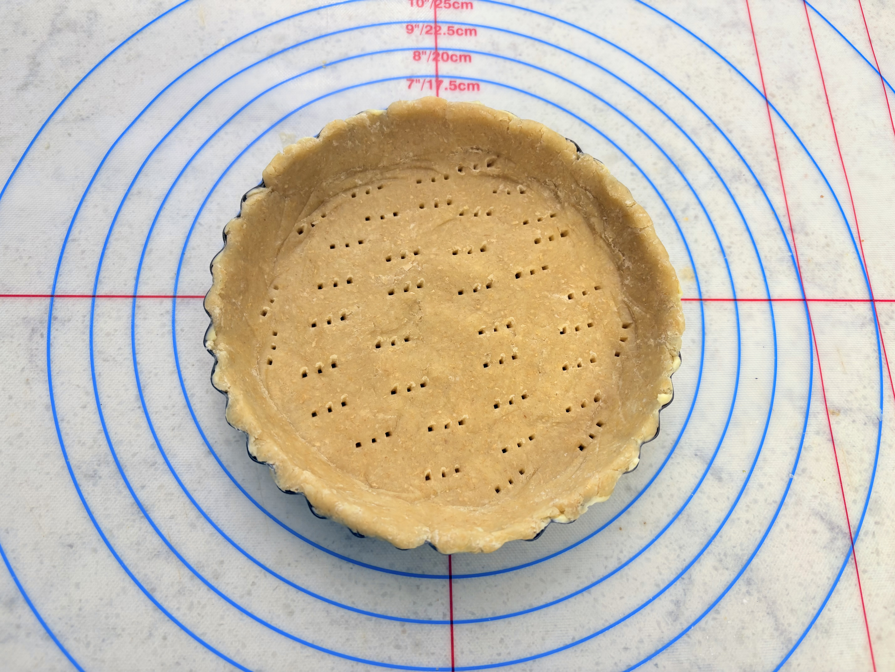
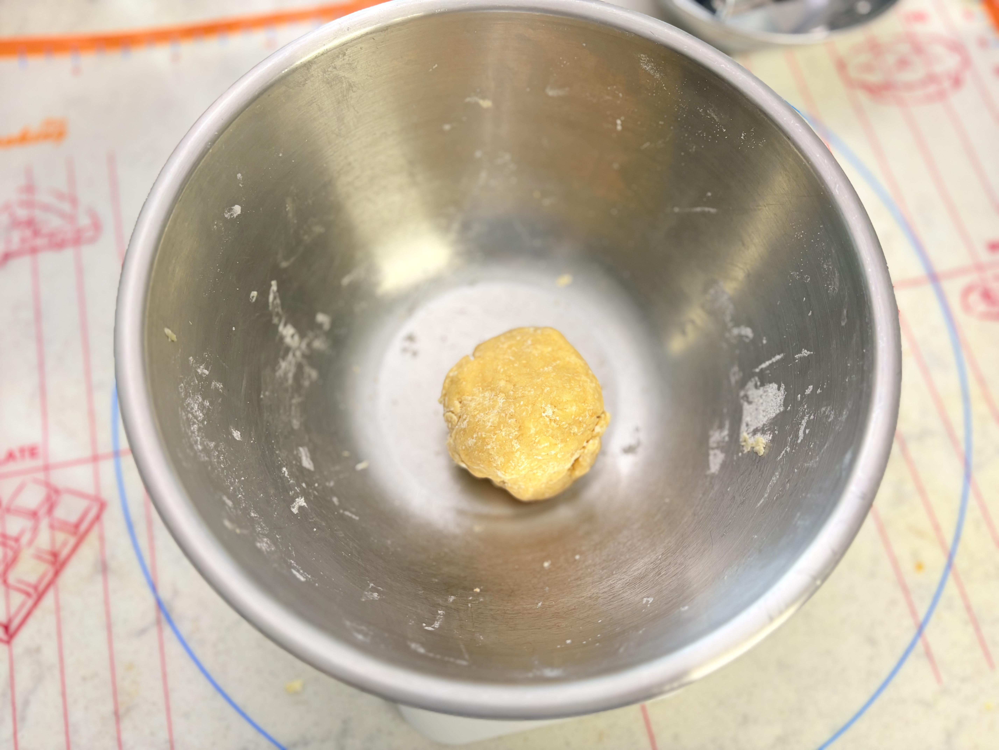
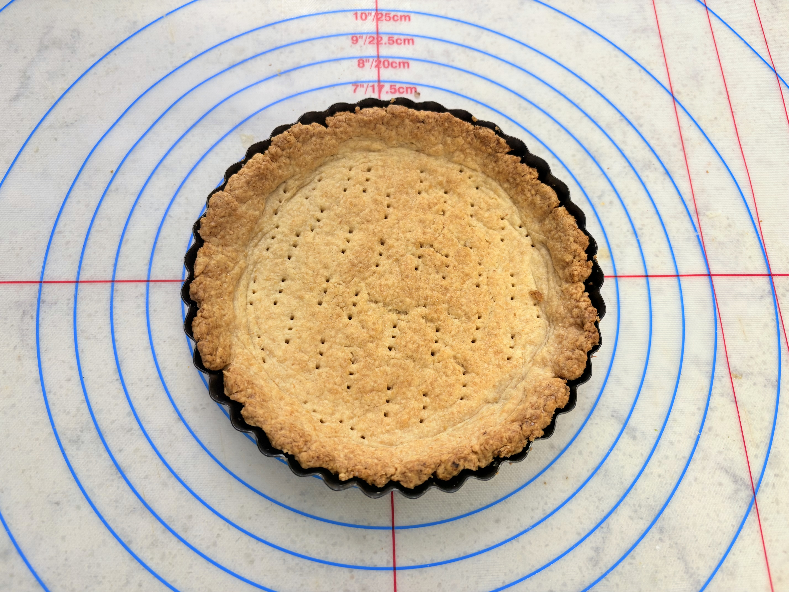
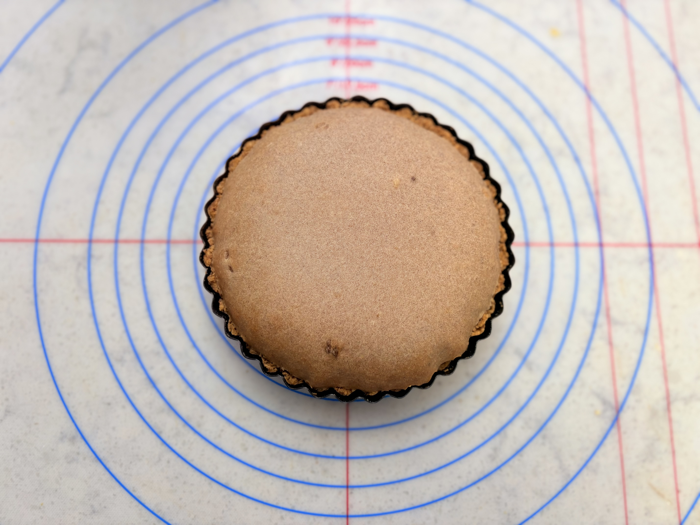
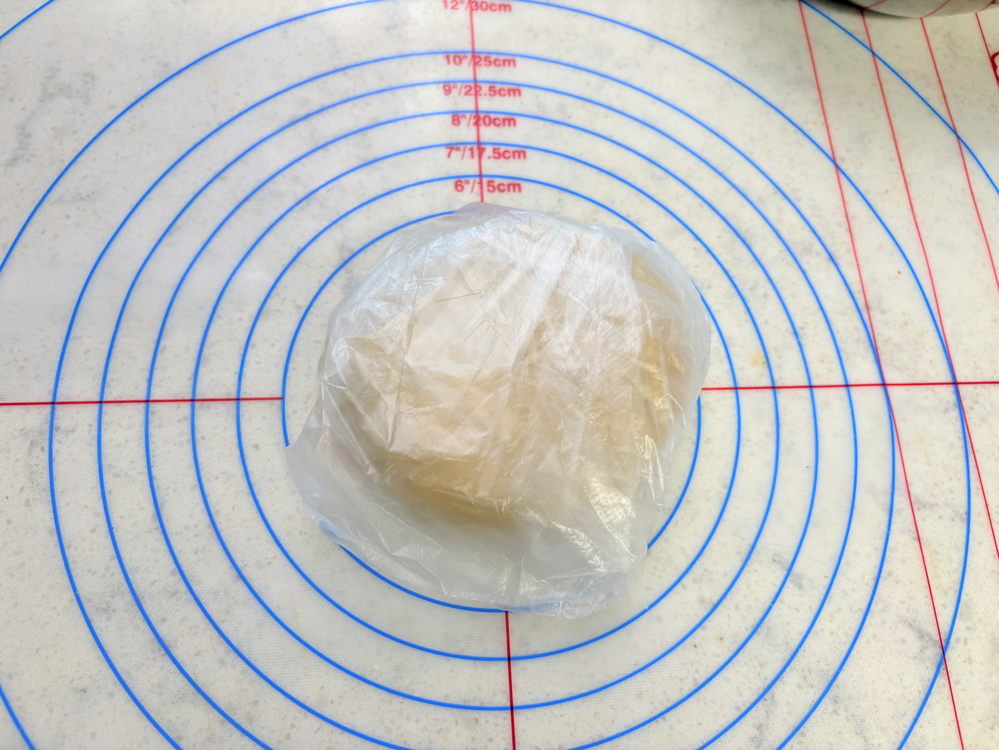
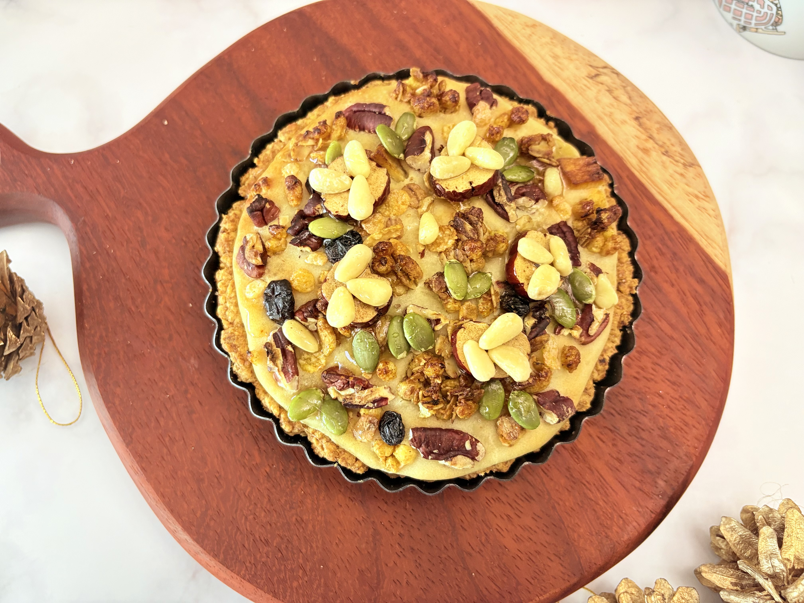

Valentine Selection
Sweet
Sweet
Tofu Pie
순두부로 빚어낸 가장 부드러운 고백

쫀득함의
미학
찹쌀의 찰기와 순두부의 담백함이 만나,
그 어떤 초콜릿보다 깊은 여운을 남깁니다.

달콤한
위로
지나치게 달지 않아 더 따뜻한,
소중한 사람을 위한 가장 정직한 선물입니다.

"
"가장 순수한 재료로 만드는,
세상에서 가장 다정한 화보집."


PROJECT DUBU
Valentine's Special 2026